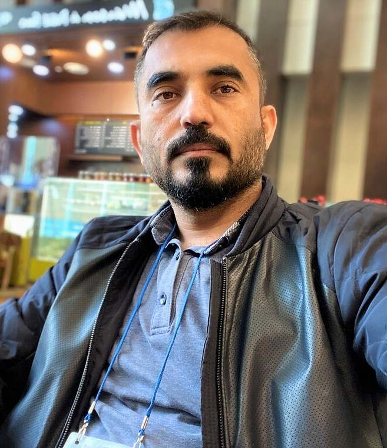

Muhammad Asif Khan
Post-doctoral Researcher
Qatar Mobility Innovations Center (QMIC), Doha, Qatar.
Download CV
Research Interests:
- Mobile computing
- Edge Intelligence
- Distributed Learning and Inference
- Automated drone surveillance
Journal Editorial Committee
- Lead Topic Editor - Edge Intelligence in 6G" in Frontiers in Communications and Networks
- Editorial Board Member - IEEE Future Directions Newsletter
Conference Chair/Co-chair
- Session Chair at Innovation and Technological Advances for Sustainable Development (ITAS 2023), Doha, Qatar.
- Program Co-Chair at 3rd International Conference on Computers and Automation (CompAuto 2023), Paris, France
- Workshop Co-Chair at “Sensing, Communication, and Localization in 6G” workshop at 6GIoTT 2022, Fuzhou, China
- Session Chair at “IEEE 41st International Conference on Consumer Electronics (ICCE), 2023 | Las Vegas, NV, USA
- Session Chair at “2nd International Conference on Computers and Automation (CompAuto 2022), Paris, France
Technical Program Committees
- IEEE ICC (2021-2013): IEEE International Conference on Communications
- IEEE CNCC (2021-2013): IEEE Consumer Communications & Networking Conference
- IEEE ICASSP 2020: 45th International Conference on Acoustics, Speech, and Signal Processing
- SIPM 2021: 9th International Conference on Signal Image Processing and Multimedia, Toronto, Canada
- TCB6GN: 1st International Workshop on Traffic Congestion in Beyond 5G/6G Networks
- IEEE SusTech: (2020-2023) IEEE Conference on Technologies for Sustainability (SusTech)
- IEEE BigData 2020: International Workshop on Big Data Reduction (IWBDR 2020)
- IEEE WF-IoT 2018: IEEE 4th World Forum on Internet of Things
- MLIS (2020-22): The 2nd International Conference on Machine Learning and Intelligent Systems
- COMS2: Second International Conference on Computing Science, Communication and Security
Journal Reviewer
- Nature Scientific Reports
- IEEE Transactions on Artificial Intelligence
- IEEE Transactions on Emerging Topics in Computing
- IEEE Transactions on Systems, Man, and Cybernetics
- IEEE Transactions on Consumer Electronics
- IEEE Communications Surveys and Tutorials
- IEEE Communication Magazine
- IEEE Wireless Communication Magazine
- IEEE Communication Standards Magazine
- IEEE Internet of Things Journal
- IEEE Internet of Things Magazine
- IEEE Systems Journal
- IEEE Access
- IEEE Open Journal of the Communication Society
- IEEE China Communications
- IET Communications
- IET Intelligent Transportation System
- KSII Transactions on Internet and Information Systems
- Wireless Personal Communication, Springer